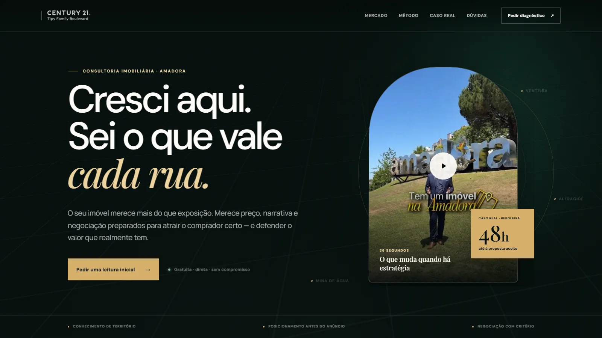

Fullstack na Naval Brands
que atrai. C ó d i g o que converte.
Sou Paulo Vitor, desenvolvedor fullstack na Naval Brands. Crio landing pages, interfaces e sistemas web com direção visual, performance e estrutura técnica para converter.
- 7
- cases selecionados
- 3-10d
- sprints de landing page
- UI + code
- do conceito ao deploy
- Landing pages
- UI/UX
- Front-end
- Back-end
Portfólio / Seleção 2026
O trabalho fala
em movimento.
Landing pages e experiências digitais construídas do conceito ao código. Explore cada interface em movimento.
Imagem em repouso. Vídeo ao aproximar, focar ou passar o cursor.
01
Vídeo expandido do projeto
Como eu construo / 04 camadas
Uma página única não nasce de um efeito. Nasce de decisões bem tomadas.
Uno estratégia, UI/UX e desenvolvimento para criar páginas bonitas, intuitivas e tecnicamente sólidas. Cada escolha precisa orientar o usuário, fortalecer a marca e contribuir para o objetivo do projeto.
01 Entender
Clareza antes da interface.
Investigo o público, a proposta da marca e o objetivo da página para definir prioridades. Antes de escolher cores ou animações, organizo a mensagem que precisa ser compreendida.
Objetivo · público · conteúdo · hierarquia02 Orientar
Uma experiência que conduz.
Transformo conteúdo em hierarquia, fluxos e interações que levam o visitante naturalmente à próxima ação. UX é remover dúvidas e tornar cada escolha simples de entender.
Arquitetura · fluxo · usabilidade · interação03 Marcar
Identidade que não parece pronta.
Tipografia, composição, cor e movimento formam um sistema visual coerente com a marca. A animação não decora: ela responde ao usuário, reforça a narrativa e torna a experiência memorável.
Direção visual · UI · motion · design system04 Sustentar
Engenharia que faz tudo durar.
Desenvolvo interfaces responsivas e acessíveis, com HTML semântico, SEO técnico e carregamento eficiente pensados desde o início — não como correções feitas depois do design.
Responsividade · acessibilidade · SEO · performanceO resultado precisa parecer único.
E funcionar com precisão.
Hoje, desenvolvo experiências e sistemas web como fullstack na Naval Brands, acompanhando cada projeto da ideia à implementação.
Conhecer a Naval BrandsPróximo projeto
Uma página que parece premium antes do lead ler a segunda linha.
Direção visual, UX, copy estrutural, motion e engenharia no mesmo fluxo. Bonita para chamar atenção. Clara para transformar atenção em conversa.